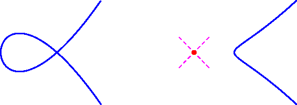
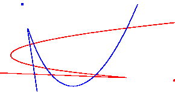
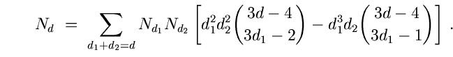

Proof. Since a cubic equation in the plane has 10 coefficients, the space of cubics is identified with P9. The condition for a plane cubic to contain a given point is linear in these coefficients. Given 8 general points, these linear equations are independent and so there is a pencil (P1) of cubics containing 8 general points in P2.
Two cubics P and Q in this pencil meet
transversally in 9 points.
Since curves in the pencil are given by
aP + bQ for [a,
Consider the Euler characteristic of Z first over
C and then over R.
Blowing up a smooth point on a surface replaces it with a
P1C and thus increases the Euler
characteristic by 1.
Since P1C has Euler characteristic 3,
we see that Z has Euler characteristic 3 + 9 = 12.
The general fibre of f is a smooth plane cubic which is homeomorphic to
the 2-torus (S1 x S1), and so has Euler
characteristic 0.
Thus only the singular fibres of f contribute to the Euler characteristic
of Z.
Assume that the 8 points are in general position so there are only nodal
cubics in the pencil.
A nodal cubic has Euler characteristic 1.
Thus there are 12 singular fibres of f and hence 12 singular cubics
meeting 8 general points in P2C.
Consider now the Euler characteristic of ZR.
Blowing up a smooth point on a real surface replaces the point by
P1R = S1, and hence
decreases the Euler characteristic by 1.
Since P2R has Euler characteristic
1, the Euler characteristic of ZR is 1 - 9 = -8.
A nonsingular real cubic is homeomorphic to either one or two disjoint copies
of S1, and hence has Euler characteristic 0.
Again the Euler characteristic of ZR is carried by
its singular fibres.
There are two nodal real cubics; either the node has two real
branches or two complex conjugate branches so that the singular point is
isolated.
Call these curves real nodal and complex nodal, respectively.
They are displayed in Figure 7.
Among the singular fibres, we have
f : Z ---> P1 ,
where f-1([a, b]) is the cubic curve defined by
the polynomial aP + bQ .
The real nodal curve is homeomorphic to a figure 8 and has Euler
characteristic -1, while the complex nodal curve is the union of a
S1 with a solitary point and so has Euler characteristic 1.
 Figure 7:
A real nodal and a complex nodal curve
Thus there are at least 8 real nodal curves containing 8 general points in
P2R.
The pencil of cubics containing the 2 complex nodal cubics of
Figure 8 has 10 real nodal cubics.
Thus there are 12 real rational cubics containing any 8 of the 12
points in Figure 8.
-8 =
#{complex nodal} - #{real nodal},
with 12 =
#{complex nodal} + #{real nodal},

(y-28)2
=
4x3-85x2
+504x-18yx
(x-28)2
=
4y3-85y2
+504y-18xy
Figure 8:
Complex nodal curves meeting in 9 points Remark 3.7
This classical problem of 12 plane cubics containing 8 points generalizes to
the problem of enumerating rational plane curves of degree d containing
3d - 1 points.
Let Nd be the number of such curves, which satisfies the
recursion [FP]

The values N1 = N2 = 1 are trivially fully
real, and we have just seen that N3 = 12 is fully real.
The next case of N4 = 620 (computed by
Zeuthen [Ze1])
seems quite challenging.Remark 3.8 The most
interesting feature of Theorem 3.6 is the
existence of a lower bound on the number of real solutions, which is a new
phenomenon.
In Section 6 we shall see evidence
that this may be a pervasive feature of this field.
Next: 3.v. Lines tangent to Spheres in
Rn
Up: 3. Enumerative Real Algebraic Geometry: Table of Contents
Previous: 3.iii. The Stewart-Gough Platform